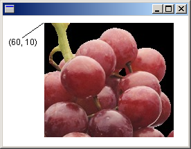

Also see the WIC Viewer GDI+ sample app.
To display a raster image (bitmap) on the screen, you need an Image object and a Graphics object. Pass the name of a file (or a pointer to a stream) to an Image constructor. After you have created an Image object, pass the address of that Image object to the DrawImage method of a Graphics object.
The following example creates an Image object from a JPEG file and then draws the image with its upper-left corner at (60, 10):
Image image(L"Grapes.jpg");
graphics.DrawImage(&image, 60, 10);
The following illustration shows the image drawn at the specified location.

The Image class provides basic methods for loading and displaying raster images and vector images. The Bitmap class, which inherits from the Image class, provides more specialized methods for loading, displaying, and manipulating raster images. For example, you can construct a Bitmap object from an icon handle (HICON).
The following example obtains a handle to an icon and then uses that handle to construct a Bitmap object. The code displays the icon by passing the address of the Bitmap object to the DrawImage method of a Graphics object.
HICON hIcon = LoadIcon(NULL, IDI_APPLICATION);
Bitmap bitmap(hIcon);
graphics.DrawImage(&bitmap, 10, 10);